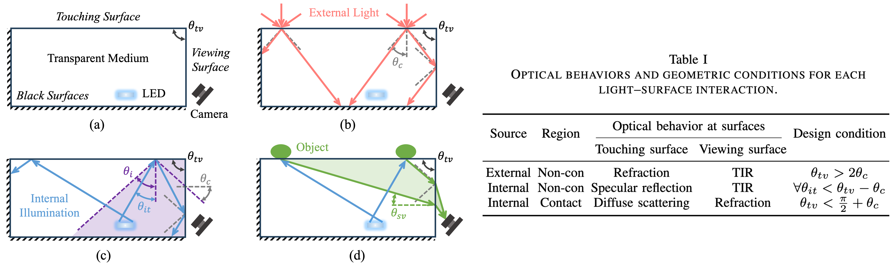
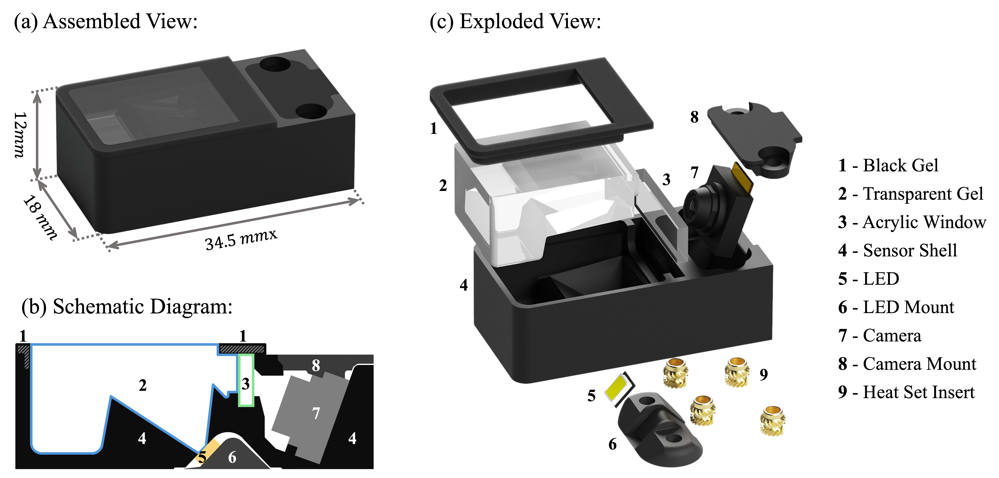
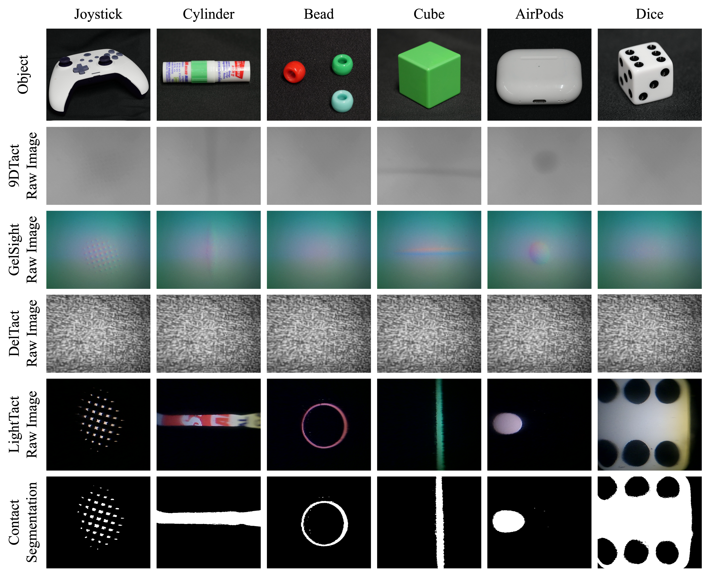

Contact often occurs without macroscopic surface deformation, such as during interaction with liquids, semi-liquids, or ultra-soft materials. However, most existing tactile sensors rely on deformation to infer contact, making such light-contact interactions difficult to perceive robustly. To address this, we present LightTact, a visual-tactile fingertip sensor that makes contact directly visible via a deformation-independent principle. LightTact features an ambient-blocking optical configuration that suppresses both external light and internal illumination at non-contact regions, while transmitting only the scattered light generated at true contacts. As a result, LightTact produces high-contrast raw images in which non-contact pixels remain near-black (mean gray value < 3) and contact pixels preserve the natural appearance of the contacting surface. Built on this, LightTact achieves accurate pixel-level contact segmentation that is robust to material properties, contact force, surface appearance, and environmental lighting. We further demonstrate that LightTact unlocks new robotic manipulation behaviors that require detection of extremely light contact, including water spreading, facial-cream dipping, and soft thin-film interaction. In addition, we show that LightTact's spatially aligned visual-tactile images can be directly interpreted by vision-language models.

LightTact uses a side-view optical layout to make contact directly visible. At non-contact regions, external light and internally reflected LED light are rejected by total internal reflection (TIR) before reaching the camera. At true contact regions, the air gap disappears and the contacted surface diffusely scatters internal illumination, allowing the camera to capture only contact-generated light. This creates a direct relationship between visibility and physical contact.

LightTact co-designs optics, mechanics, materials, and fabrication into a compact fingertip sensor for deformation-independent contact sensing.

LightTact reliably senses both light and firm contact from rigid objects while preserving their visual appearance. In contrast, deformation-based tactile sensors fail under light contact (the bead example).
@article{lin2025lighttact,
title={LightTact: A Visual-Tactile Fingertip Sensor for Deformation-Independent Contact Sensing},
author={Lin, Changyi and Huo, Boda and Yu, Mingyang and Ruppel, Emily and Chen, Bingqing and Francis, Jonathan and Zhao, Ding},
journal={arXiv preprint arXiv:2512.20591},
year={2025}
}